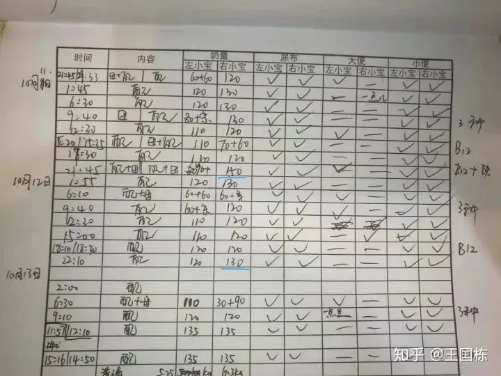
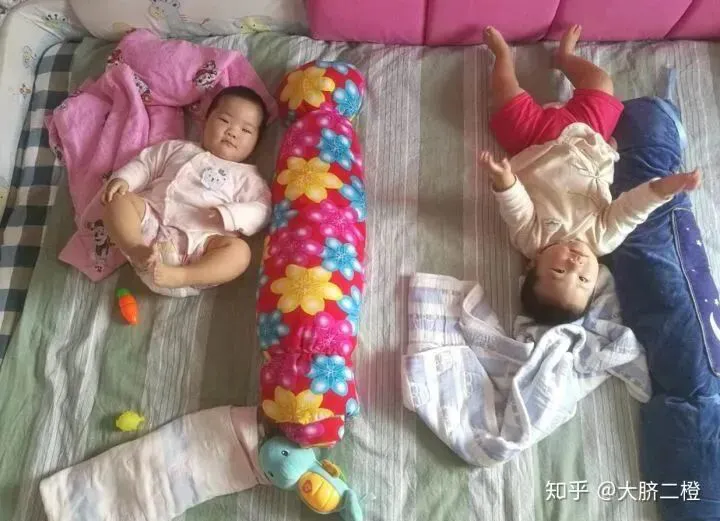
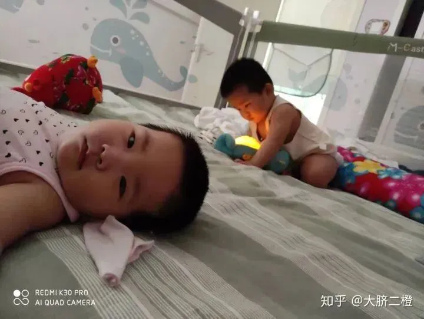
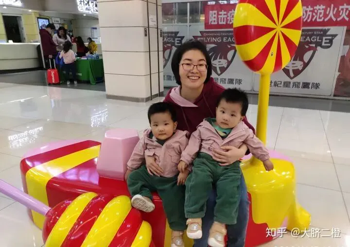

孖仔帮
公众号ID：twinsbang
关注
文图|大脐二橙
早产儿，主动管理型带娃奶爸。工业互联网、智能制造欢迎交流。
【帮主】圆圈妈妈：这是孖仔帮双胎专栏【孖妈来了】的第14篇文章，年末的这一篇干货不得了了，转载自知乎高赞博主【大脐二橙】奶爸的热心分享，主题是如何让双胞胎早日睡整夜觉。
这位大脐二橙奶爸，家有双胞胎姐妹花一对，是我们孖仔帮双胞胎奶爸群的资深育儿达人，他帮助了无数小白爸爸们顺利度过双胞胎屎尿屁齐飞，老婆老妈双打混战的无数个日日夜夜。
同时呢，他还是双胞胎同城群·北京站的妇女之友兼妈妈导师，曾开导过众多迷茫无助的妇女们重新燃起养家育儿的信心与希望。
这篇分享不仅有满满的干货，我从字里行间还看到大脐二橙奶爸，作为父亲，对双胞胎姐俩的耐心爱心，作为丈夫，对妻子的体贴关爱。
这样一位“别人家的爸爸+别人家的老公”会有怎样的睡训绝招呢？继续往下看吧！
三个半月时，双胞胎姐俩开始睡整觉了。
那时候刚好孩子妈妈不在家，我自己带2个孩子一个星期，一个星期后，孩子们就从7餐奶减到了6餐，从21点睡到5-6点。
直到现在1岁了，晚上吵醒我的次数很少，偶尔白天受了惊吓，或者生病了，晚上有可能会哭醒。
到5个月时候，已经形成了非常规律的作息时间，全天睡眠大概14-15小时，睡眠时段如下：
1.晚上21:30-22左右入睡，到早上5:30-6点吃奶，然后继续睡到8:30-9点。
2.上午10:30左右小睡一下，一般1小时内。
3.中午13点左右午睡一下，如果睡着了，会有1-2小时左右。
4.下午16-18点之间小睡一下，一般1小时内。
随着春夏到来，天亮的早了，孩子醒来基本固定在早上6点到6点半醒来，后面的睡觉时间保持到现在。 下面谈谈我们的做法。
一、睡眠习惯形成的关键窗口期
宝宝3个多月正是睡眠习惯形成的关键窗口期，这段时间的形成的习惯，直接影响孩子一岁以内的睡眠规律。
月子里的孩子基本处于吃-睡-吃-睡的循环，比较好带；2-3个月的时候，孩子比较难带。
尤其是2个月期间，孩子经常被肠胀气困扰，需要哄睡，并且经常睡的很晚，动不动就熬到23-24点多，我放张哄睡图就能够说明这个问题了。
二月闹的时候，就喜欢竖着抱才舒服些， 2月期如果孩子不闹，就可以适当进入睡眠培养流程，帮助孩子适应。
二、规律喂养与作息
想要孩子有良好的睡眠习惯，首先要有规律的喂养习惯。
一般情况下，混合喂养或纯奶粉喂养的孩子，睡眠情况好于母乳亲喂。母乳亲喂经常随时吃，也不知道吃了多少奶量，母乳水占比较高，坚持的时间比较短，所以孩子需要经常吃奶。
到后期，孩子吃奶的生理需求与心理需求融合，有时候吃奶不是为了吃饱，而是吃上了才有安全感，才能入睡，形成了奶睡习惯。
如果是混合喂养或纯奶粉喂养的孩子，5-6个月前，可以按孩子身体所需计算全天奶量，然后根据自己的喂奶次数计算单次所需奶量，实现按身体所需喂养，保证孩子吃饱。
新生儿常见的喂奶次数是每天8次。
奶量计算方法：新生儿奶量=体重（kg）*（150-180）/8。
如果婴儿A体重2.5kg， A的奶量=2.5*150/8=46ml
一般孩子奶量在150-180（ml/kg体重）的范围，新生儿期尽量不要超过这个范围，后面2个月左右，孩子如果比较能吃可以到200ML左右。
没有全部母乳亲喂的经验，在此不便置喙。
随着孩子长大，喂奶次数逐渐减少，从8次到7次，再从7次到6次，孩子也逐渐有了昼夜观，晚上睡眠时间加长了。
三、给孩子吃饱
这是大家经常忽略的问题。
2-3个月的孩子，如果吃奶情况比较好，晚上最后一餐奶，可以比平时多半勺奶粉（15ml水），孩子饱腹感强，更容易入睡。
开始建立习惯的时候，孩子的长睡眠时间和睡前奶量成正比，每增加半勺奶粉可以多睡半个小时。如下图所示11月11日，右小宝的日常奶量是120-130，睡前要吃到150ml。
四、建立固定安抚方式
在孩子很小的时候，就应该着手建立固定的安抚方式，宝宝会逐渐适应，并且对这种安抚方式产生依赖和足够的安全感。
每个家长都可以根据自己的习惯建立，比如抚摸头，拍拍身体，经常唱的几首歌，或者其它具有辨识度的声音。
我一共有四个级别的安抚方式：
第一级，轻拍宝宝肩部或身体侧面。
第二级，抚摸宝宝的腿，左右兼可。这个安抚方式来源于被动操的动作。
第三级，手伸到衣服里，抚摸宝宝的肚子。这个安抚方式来源于被动操的动作。
第四级，抱起。抱起对大人而言是最简单的安抚方式，但也是最后的安抚方式。孩子小的时候没关系，等孩子有20斤的时候，整天抱哄会很辛苦。并且，大人很难长时间保持固定姿势，宝宝蜷缩着也并不舒服。
在安抚时，建议要出声。孩子可以通过声音辨认经常照顾他的人，熟悉的声音会给孩子带来安全感，更容易入睡。
除了大人的声音以为，还推荐使用智能音响播放背景音，后期可以帮助孩子放松。我比较推荐班得瑞轻音乐，可以买个智能音箱循环播放，非常方便。
五、给孩子提供独立的睡觉空间和安抚物
尽量给孩子提供独立的睡觉空间。
刚入睡时，不要改变房间的环境，比如灯光、背景音乐等，甚至不必特意禁声，但也不要发出陌生的高分声音。背景音乐可以用智能音箱播放，推荐班得瑞系列纯音乐。
其次，婴儿床是个很好的选择。可以采用跟大床在一起的拼接床，方便照顾，品牌和普通的都有，丰俭由人。
孩子掌握自主翻身技能后，经常翻身把自己弄醒，可以找一个被子卷起来扎紧，放在孩子身侧，当孩子翻身时，可以骑上去，这样孩子就不容易因为翻身把自己弄醒。
由大床和拼接床形成的超大床，两个隔离的宝宝给孩子提供专属安抚物。 孩子睡前会跟安抚物互动玩耍，有助于分散睡前焦虑，自主进入睡眠。
我的孩子们的安抚物是费雪海马。很多人孕期就已经买了，正好继续利用起来，
睡前可以玩自己的玩具 ▲
六、不要过度护理，减少干扰
孩子入睡后，家长们要有所克制，不要总是过去弄这弄那，或者又要换尿不湿（除非发现拉臭了），又是换被子等等。
总之，如果孩子睡着了，尽量不要打扰他。
我家孩子在3月龄时，妈妈有一个星期不在家，我自己带睡。妈妈走的第一天晚上孩子就从22点睡到了4点，一个星期内，基本就稳定到了4:30-5点吃奶。
妈妈回来后，挨着孩子们睡，她晚上总是醒来去看孩子，担心他们冷了，觉的他们饿了要吃奶等等。几天时间，孩子的夜奶时间从4:30-5点倒退到2-2:30了。
我一看这不行啊，请她到另一边睡，换我挨着孩子，她离的远了，听不到哪些细小的声音，也从心里放下了焦虑，孩子的睡眠又迅速回归到4-5点，现在5个月多，稳定到21:30左右睡，6点吃奶，然后继续睡到9点。
妈妈们心中都有强烈的责任感，时时都想着我必须照顾好孩子，这时候如果有个能让她放心的人在孩子身边，她就可以暂时放下这个心理负担，心安理得的睡个好觉。（圆圈妈妈备注：果然是妇女之友，深谙老母亲的心，这段话真的说到我心坎里，的确是这样的！┭┮﹏┭┮）
你很累，宝宝也很累，放下焦虑！
七、充分放电，准确识别瞌睡信号
孩子有3-4个月大的时候，跟大人有了很多互动，晚上睡前可以安排1小时放电时间，包括但不限于读书、讲故事、看卡片、练习抬头、练习翻身、被动操等等...一套流程下来，你累了，孩子也累了，吃完最后一餐奶正好睡觉。
如果孩子手控制的比较灵活，会有明确的瞌睡信号-揉眼睛。 一旦发现孩子开始揉眼睛，立马把他放在固定睡觉的位置，进入入睡环境，包括但不限于灯光控制、背景音乐、安抚物、轻拍身体并持续发出奥奥的声音，这些都可以帮助孩子们入睡。
八、晚上自主入睡方法
当孩子有5-6个月时，可以逐步培养自主入睡了，以下是一些实践过的方法，供您参考。
1.给孩子吃饱。
2.入睡时间，地点相对固定。
3.手或身边有个安抚物，最好是孩子每天使用的、熟悉的，可发光发声的更好，如小海马，小熊之类的。
4.睡前不能太困，也不能完全不困，也不要很兴奋。睡前半小时，以吃奶、做按摩等能够让孩子冷静下来的活动为主，孩子如果太兴奋很难入睡。
5.有熟悉的大人在身边陪伴，但不用对视或不断的对话，但用在同一个房间或床上，孩子得能看到你，听到你的声音。
6.可以哼唱常用的安慰歌曲，安慰歌曲不宜过多，熟悉的一两首即可，反复哼唱。
7.可以按摩或者抚摸孩子的身体，腿，胳膊，头发都可以，安抚孩子。
8.孩子可以玩儿，可以哼唧，可以随意扭动身体都不用管，原则是安抚孩子平静下来，不大哭就不用抱起。
九、目前近况
目前大琦和二珵已经17个月了，一年多的时间下来效果还可以，更新生活作息如下：
1.20:30-21:00关灯，开背景音乐，准备入睡。大概10个月左右，就不需要抱哄了。但需要妈妈或爸爸在床上陪着她们，她们各个找到自己的小窝，各种翻滚找到自己舒服的姿势就入睡了。一夜几乎不醒，也早就没有夜奶了。
2.夏天的时候早上6点起床，最近冬天是7点左右，因为天亮的晚了，推迟了一个小时。
3.白天一般会有1-2次睡眠，如果是1次的话会有2个小时左右，2次的话各自时间会缩短一些。
4.日常吃饭是三餐三奶，几乎无任何零食。
5.目前生长发育良好，有点胖。
蘑菇妈妈和大琦、二珵▲
本文转载自知乎博主【大脐二橙】的回答。
知乎原题《你家宝宝多大开始晚上睡整觉的？你是怎么做到让宝宝睡整觉的？》
-END-
作者/大脐二橙@bzsang
排版/圆圈妈妈
写手招募
如果你是爱分享的双胞胎爸爸或妈妈
欢迎投稿至孖仔帮【双胎专栏】
分享出你和双胞胎的成长故事
添加小助手微信sgguy-com
备注“投稿”
今日互动话题
#你有哪些训练双胞胎睡整夜觉的妙招？#
评论区聊一聊呗！
微信公众号：孖仔帮
ID : twinsbang
专注双胞胎孕育，养育，教育经验分享
扫码关注我们
点一下你会更好看耶





